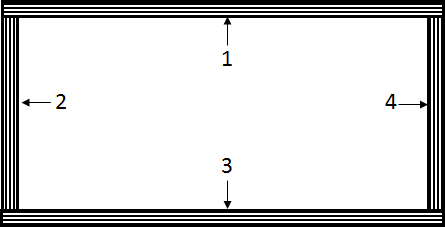
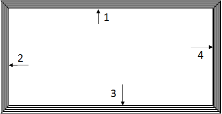

Structures Module¶
This module contains a library of classes devoted to structural analysis.
The primary purpose of this library is to fascilitate the ROM (reduced order modeling) of structures that can simplified to beams. The real power of this library comes from it’s the XSect class. This class can create and analyze a cross-section, allowing the user to accurately model a nonhomogeneous (made of multiple materials) anisotropic (materials that behave anisotropically such as composites) complex cross-sections.
It should be noted that classes are ordered by model complexity. The further down the structures.py library, the more complex the objects, often requiring multiple of their predecessors. For example, the CQUADX class requires four node objects and a material object.
| SUMARRY OF THE CLASSES: | |
|---|---|
Node: Creates a node object with 3D position.
Material: Creates a material object, generating the 3D constitutive relations.
- MicroMechanics: Class to fascilitate the calculation of composite stiffnesses
using micro-mechanical models where fibers are long and continuous.
- CQUADX: Creates a 2D linear quadrilateral element, mainly used to fascilitate cross-sectional analysis, this class could be modified in future updates
such that they could also be used to create plate or laminate element objects as well.
- MaterialLib: Creates a material library object meant to hold many material
objects.
Ply: Creates ply objects which are used in the building of a laminate object.
- Laminate: Creates laminate objects which could be used for CLT (classical
lamination theory) analysis as well as to be used in building a beam cross-section.
- XSect: Creates a cross-section object which can be used in the ROM of a beam
with a non-homogeneous anisotropic cross-section. Currently only supports simple box beam cross-section (i.e., four laminates joined together to form a box), however outer mold lines can take the shape of airfoil profiles. See the Airfoil class in AircraftParts.py for more info.
TBeam: Creates a single Timoshenko beam object for FEA.
- SuperBeam: Creates a super beam object. This class is mainly used to automate
the creation of many connected TBeam objects to be used late for FEA.
- WingSection: A class which creates and holds many super beams, each of which
could have different cross-sections. It also helps to dimensionalize plates for simple closed-form composite buckling load aproximations.
Note
Currently the inclusion of thermal strains are not supported for any structural model.
NODE¶
-
class
AeroComBAT.Structures.Node(NID, x)[source]¶ Creates a node object.
Node objects could be used in any finite element implementation.
Attributes: NID (int): The integer identifier given to the object.
- x (Array[float]): An array containing the 3 x-y-z coordinates of the
node.
- summary (str): A string which is a tabulated respresentation and
summary of the important attributes of the object.
Methods: - printSummary: This method prints out basic information about the node
object, such as it’s node ID and it’s x-y-z coordinates
MATERIAL¶
-
class
AeroComBAT.Structures.Material(MID, name, matType, mat_constants, mat_t, **kwargs)[source]¶ creates a linear elastic material object.
This class creates a material object which can be stored within a material library object. The material can be in general orthotropic.
Attributes: name (str): A name for the material.
MID (int): An integer identifier for the material.
- matType (str): A string expressing what type of material it is.
Currently, the supported materials are isotropic, transversely isotropic, and orthotropic.
- summary (str): A string which is a tabulated respresentation and
summary of the important attributes of the object.
- t (float): A single float which represents the thickness of a ply if
the material is to be used in a composite.
- rho (float): A single float which represents the density of the
materials.
- Smat (6x6 numpy Array[float]): A numpy array representing the
compliance matrix in the fiber coordinate system.*
- Cmat (6x6 numpy Array[float]): A numpy array representing the
stiffness matrix in the fiber coordinate system.*
Methods: - printSummary: This method prints out basic information about the
material, including the type, the material constants, material thickness, as well as the tabulated stiffness or compliance matricies if requested.
Note
The CQUADX element assumes that the fibers are oriented along the (1,0,0) in the global coordinate system.
-
__init__(MID, name, matType, mat_constants, mat_t, **kwargs)[source]¶ Creates a material object
The main purpose of this class is assembling the constitutive relations. Regardless of the analysis
Args: MID (int): Material ID.
name (str): Name of the material.
- matType (str): The type of the material. Supported material types
are “iso”, “trans_iso”, and “ortho”.
- mat_constants (1xX Array[Float]): The requisite number of material
constants required for any structural analysis. Note, this array includes the material density. For example, an isotropic material needs 2 elastic material constants, so the total length of mat_constants would be 3, 2 elastic constants and the density.
mat_t (float): The thickness of 1-ply of the material
- th (1x3 Array[float]): The angles about which the material can be
rotated when it is initialized. In degrees.
Returns: - None
Note
While this class supports material direction rotations, it is more robust to simply let the CQUADX and Mesher class handle all material rotations.
-
printSummary(**kwargs)[source]¶ Prints a tabulated summary of the material.
This method prints out basic information about the material, including the type, the material constants, material thickness, as well as the tabulated stiffness or compliance matricies if requested.
Args: - compliance (str): A boolean input to signify if the compliance
matrix should be printed.
- stiffness (str): A boolean input to signify if the stiffness matrix
should be printed.
Returns: - String print out containing the material name, as well as material
constants and other defining material attributes. If requested this includes the material stiffness and compliance matricies.
CQUADX¶
-
class
AeroComBAT.Structures.CQUADX(EID, nodes, MID, matLib, **kwargs)[source]¶ Creates a linear, 2D 4 node quadrilateral element object.
The main purpose of this class is to assist in the cross-sectional analysis of a beam, however it COULD be modified to serve as an element for 2D plate or laminate FE analysis.
Attributes: type (str): A string designating it a CQUADX element.
- xsect (bool): States whether the element is to be used in cross-
sectional analysis.
- th (1x3 Array[float]): Array containing the Euler-angles expressing how
the element constitutive relations should be rotated from the material fiber frame to the global CSYS. In degrees.
EID (int): An integer identifier for the CQUADX element.
- MID (int): An integer refrencing the material ID used for the
constitutive relations.
- NIDs (1x4 Array[int]): Contains the integer node identifiers for the
node objects used to create the element.
- nodes (1x4 Array[obj]): Contains the properly ordered nodes objects
used to create the element.
- xs (1x4 np.array[float]): Array containing the x-coordinates of the
nodes used in the element
- ys (1x4 np.array[float]): Array containing the y-coordinates of the
nodes used in the element
rho (float): Density of the material used in the element.
mass (float): Mass per unit length (or thickness) of the element.
- U (12x1 np.array[float]): This column vector contains the CQUADXs
3 DOF (x-y-z) displacements in the local xsect CSYS due to cross- section warping effects.
- Eps (6x4 np.array[float]): A matrix containing the 3D strain state
within the CQUADX element.
- Sig (6x4 np.array[float]): A matrix containing the 3D stress state
within the CQUADX element.
Methods: - x: Calculates the local xsect x-coordinate provided the desired master
coordinates eta and xi.
- y: Calculates the local xsect y-coordinate provided the desired master
coordinates eta and xi.
- J: Calculates the jacobian of the element provided the desired master
coordinates eta and xi.
- resetResults: Initializes the displacement (U), strain (Eps), and
stress (Sig) attributes of the element.
- getDeformed: Provided an analysis has been conducted, this method
returns 3 2x2 np.array[float] containing the element warped displacements in the local xsect CSYS.
- getStressState: Provided an analysis has been conducted, this method
returns 3 2x2 np.array[float] containing the element stress at four points. The 3D stress state is processed to return the Von-Mises or Maximum Principal stress state.
- printSummary: Prints out a tabulated form of the element ID, as well
as the node ID’s referenced by the element.
-
J(eta, xi)[source]¶ Calculates the jacobian at a point in the element.
This method calculates the jacobian at a local point within the element provided the master coordinates eta and xi.
Args: - eta (float): The eta coordinate in the master coordinate domain.*
- xi (float): The xi coordinate in the master coordinate domain.*
Returns: - Jmat (3x3 np.array[float]): The stress-resutlant transformation
array.
Note
Xi and eta can both vary between -1 and 1 respectively.
-
__init__(EID, nodes, MID, matLib, **kwargs)[source]¶ Initializes the element.
Args: EID (int): An integer identifier for the CQUADX element.
- nodes (1x4 Array[obj]): Contains the properly ordered nodes objects
used to create the element.
- MID (int): An integer refrencing the material ID used for the
constitutive relations.
- matLib (obj): A material library object containing a dictionary
with the material corresponding to the provided MID.
- xsect (bool): A boolean to determine whether this quad element is
to be used for cross-sectional analysis. Defualt value is True.
- th (1x3 Array[float]): Array containing the Euler-angles expressing
how the element constitutive relations should be rotated from the material fiber frame to the global CSYS. In degrees.
Returns: - None
Note
The reference coordinate system for cross-sectional analysis is a
local coordinate system in which the x and y axes are planer with the element, and the z-axis is perpendicular to the plane of the element.
-
getDeformed(**kwargs)[source]¶ Returns the warping displacement of the element.
Provided an analysis has been conducted, this method returns 3 2x2 np.array[float] containing the element warped displacements in the local xsect CSYS.
Args: - warpScale (float): A multiplicative scaling factor intended to
exagerate the warping displacement within the cross-section.
Returns: - xdef (2x2 np.array[float]): warped x-coordinates at the four corner
points.
- ydef (2x2 np.array[float]): warped y-coordinates at the four corner
points.
- zdef (2x2 np.array[float]): warped z-coordinates at the four corner
points.
-
getStressState(crit='VonMis')[source]¶ Returns the stress state of the element.
Provided an analysis has been conducted, this method returns a 2x2 np.array[float] containing the element the 3D stress state at the four guass points by default.*
Args: - crit (str): Determines what criteria is used to evaluate the 3D
stress state at the sample points within the element. By default the Von Mises stress is returned. Currently supported options include: Von Mises (‘VonMis’), maximum principle stress (‘MaxPrin’), the minimum principle stress (‘MinPrin’), and the local cross-section stress states ‘sig_xx’ where the subindeces can go from 1-3. The keyword ‘none’ is also an option.
Returns: - sigData (2x2 np.array[float]): The stress state evaluated at four
points within the CQUADX element.
Note
The XSect method calcWarpEffects is what determines where strain
and stresses are sampled. By default it samples this information at the Guass points where the stress/strain will be most accurate.
-
printSummary(nodes=False)[source]¶ A method for printing a summary of the CQUADX element.
Prints out a tabulated form of the element ID, as well as the node ID’s referenced by the element.
Args: - None
Returns: - summary (str): Prints the tabulated EID, node IDs and material IDs
associated with the CQUADX element.
-
resetResults()[source]¶ Resets stress, strain and warping displacement results.
Method is mainly intended to prevent results for one analysis or sampling location in the matrix to effect the results in another.
Args: - None
Returns: - None
-
x(eta, xi)[source]¶ Calculate the x-coordinate within the element.
Calculates the local xsect x-coordinate provided the desired master coordinates eta and xi.
Args: - eta (float): The eta coordinate in the master coordinate domain.*
- xi (float): The xi coordinate in the master coordinate domain.*
Returns: - x (float): The x-coordinate within the element.
Note
Xi and eta can both vary between -1 and 1 respectively.
-
y(eta, xi)[source]¶ Calculate the y-coordinate within the element.
Calculates the local xsect y-coordinate provided the desired master coordinates eta and xi.
Args: - eta (float): The eta coordinate in the master coordinate domain.*
- xi (float): The xi coordinate in the master coordinate domain.*
Returns: - `y (float)’: The y-coordinate within the element.
Note
Xi and eta can both vary between -1 and 1 respectively.
MATERIAL LIBRARY¶
-
class
AeroComBAT.Structures.MaterialLib[source]¶ Creates a material library object.
This material library holds the materials to be used for any type of analysis. Furthermore, it can be used to generate new material objects to be automatically stored within it. See the Material class for suported material types.
Attributes: - matDict (dict): A dictionary which stores material objects as the
values with the MIDs as the associated keys.
Methods: addMat: Adds a material to the MaterialLib object dictionary.
getMat: Returns a material object provided an MID
- printSummary: Prints a summary of all of the materials held within the
matDict dictionary.
-
__init__()[source]¶ Initialize MaterialLib object.
The initialization method is mainly used to initialize a dictionary which houses material objects.
Args: - None
Returns: - None
-
addMat(MID, mat_name, mat_type, mat_constants, mat_t, **kwargs)[source]¶ Add a material to the MaterialLib object.
This is the primary method of the class, used to create new material obects and then add them to the library for later use.
Args: MID (int): Material ID.
name (str): Name of the material.
- matType (str): The type of the material. Supported material types
are “iso”, “trans_iso”, and “ortho”.
- mat_constants (1xX Array[Float]): The requisite number of material
constants required for any structural analysis. Note, this array includes the material density. For example, an isotropic material needs 2 elastic material constants, so the total length of mat_constants would be 3, 2 elastic constants and the density.
mat_t (float): The thickness of 1-ply of the material
- th (1x3 Array[float]): The angles about which the material can be
rotated when it is initialized. In degrees.
- overwrite (bool): Input used in order to define whether the
material being added can overwrite another material already held by the material library with the same MID.
Returns: - None
PLY¶
-
class
AeroComBAT.Structures.Ply(Material, th)[source]¶ Creates a CLT ply object.
A class inspired by CLT, this class can be used to generate laminates to be used for CLT or cross-sectional analysis. It is likely that ply objects won’t be created individually and then assembeled into a lamiante. More likely is that the plies will be generated within the laminate object. It should also be noted that it is assumed that the materials used are effectively at most transversely isotropic.
Attributes: E1 (float): Stiffness in the fiber direction.
E2 (float): Stiffness transverse to the fiber direction.
nu_12 (float): In plane poisson ratio.
G_12 (float): In plane shear modulus.
t (float): Thickness of the ply.
- Qbar (1x6 np.array[float]): The terms in the rotated, reduced stiffness
matrix. Ordering is as follows: [Q11,Q12,Q16,Q22,Q26,Q66]
- MID (int): An integer refrencing the material ID used for the
constitutive relations.
- th (float): The angle about which the fibers are rotated in the plane
in degrees.
Methods: - genQ: Given the in-plane stiffnesses used by the material of the ply,
the method calculates the terms of ther reduced stiffness matrix.
- printSummary: This prints out a summary of the object, including
thickness, referenced MID and in plane angle orientation theta in degrees.
-
__init__(Material, th)[source]¶ Initializes the ply.
This method initializes information about the ply such as in-plane stiffness repsonse.
Args: - Material (obj): A material object, most likely coming from a
material library.
- th (float): The angle about which the fibers are rotated in the
plane in degrees.
Returns: - None
-
genQ(E1, E2, nu12, G12)[source]¶ A method for calculating the reduced compliance of the ply.
Intended primarily as a private method but left public, this method, for those unfarmiliar with CLT, calculates the terms in the reduced stiffness matrix given the in plane ply stiffnesses. It can be thus inferred that this requires the assumption of plane stres. This method is primarily used during the ply instantiation.
Args: - E1 (float): The fiber direction stiffness.
- E2 (float): The stiffness transverse to the fibers.
- nu12 (float): The in-plane poisson ratio.
- G12 (float): The in-plane shear stiffness.
Returns: - (1x4 np.array[float]): The terms used in the reduced stiffness
matrix. The ordering is: [Q11,Q12,Q22,Q66].
LAMINATE¶
-
class
AeroComBAT.Structures.Laminate(n_i_tmp, m_i_tmp, matLib, **kwargs)[source]¶ Creates a CLT laminate object.
This class has two main uses. It can either be used for CLT analysis, or it can be used to build up a 2D mesh for a descretized cross-section.
Attributes: - mesh (NxM np.array[int]): This 2D array holds NIDs and is used
to represent how nodes are organized in the 2D cross-section of the laminate.
- xmesh (NxM np.array[int]): This 2D array holds the rigid x-coordinates
of the nodes within the 2D descretization of the laminate on the local xsect CSYS.
- ymesh (NxM np.array[int]): This 2D array holds the rigid y-coordinates
of the nodes within the 2D descretization of the laminate on the local xsect CSYS.
- zmesh (NxM np.array[int]): This 2D array holds the rigid z-coordinates
of the nodes within the 2D descretization of the laminate on the local xsect CSYS.
H (float): The total laminate thickness.
rho_A (float): The laminate area density.
- plies (1xN array[obj]): Contains an array of ply objects used to
construct the laminate.
t (1xN array[float]): An array containing all of the ply thicknesses.
- ABD (6x6 np.array[float]): The CLT 6x6 matrix relating in-plane strains
and curvatures to in-plane force and moment resultants.
- abd (6x6 np.array[float]): The CLT 6x6 matrix relating in-plane forces
and moments resultants to in-plane strains and curvatures.
- z (1xN array[float]): The z locations of laminate starting and ending
points. This system always starts at -H/2 and goes to H/2
- equivMat (obj): This is orthotropic material object which exhibits
similar in-plane stiffnesses.
- forceRes (1x6 np.array[float]): The applied or resulting force and
moment resultants generated during CLT analysis.
- globalStrain (1x6 np.array[float]): The applied or resulting strain
and curvatures generated during CLT analysis.
Methods: - printSummary: This method prints out defining attributes of the
laminate, such as the ABD matrix and layup schedule.
-
__init__(n_i_tmp, m_i_tmp, matLib, **kwargs)[source]¶ Initializes the Laminate object
The way the laminate initialization works is you pass in two-three arrays and a material library. The first array contains information about how many plies you want to stack, the second array determines what material should be used for those plies, and the third array determines at what angle those plies lie. The class was developed this way as a means to fascilitate laminate optimization by quickly changing the number of plies at a given orientation and using a given material.
Args: - n_i_tmp (1xN array[int]): An array containing the number of plies
using a material at a particular orientation such as: (theta=0,theta=45...)
- m_i_tmp (1xN array[int]): An array containing the material to be
used for the corresponding number of plies in the n_i_tmp array
- matLib (obj): The material library holding different material
objects.
sym (bool): Whether the laminate is symetric. (False by default)
- th (1xN array[float]): An array containing the orientation at which
the fibers are positioned within the laminate.
Returns: - None
Note
If you wanted to create a [0_2/45_2/90_2/-45_2]_s laminate of the same material, you could call laminate as:
lam = Laminate([2,2,2,2],[1,1,1,1],matLib,sym=True)
Or:
lam = Laminate([2,2,2,2],[1,1,1,1],matLib,sym=True,th=[0,45,90,-45])
Both of these statements are equivalent. If no theta array is provided and n_i_tmp is not equal to 4, then Laminate will default your fibers to all be running in the 0 degree orientation.
-
printSummary(**kwargs)[source]¶ Prints a summary of information about the laminate.
This method can print both the ABD matrix and ply information schedule of the laminate.
Args: - ABD (bool): This optional argument asks whether the ABD matrix
should be printed.
- decimals (int): Should the ABD matrix be printed, python should
print up to this many digits after the decimal point.
- plies (bool): This optional argument asks whether the ply schedule
for the laminate should be printed.
Returns: - None
MESHER¶
-
class
AeroComBAT.Structures.Mesher[source]¶ Meshes cross-section objects
This class is used to descritize cross-sections provided laminate objects. Currently only two cross-sectional shapes are supported. The first is a box beam using an airfoil outer mold line, and the second is a hollow tube using as many laminates as desired. One of the main results is the population of the nodeDict and elemDict attributes for the cross-section.
Attributes: - None
Methods: - boxBeam: Taking several inputs including 4 laminate objects and meshes
a 2D box beam cross-section.
laminate: Meshes the cross-section of a single laminate.
- cylindricalTube: Taking several inputs including n laminate objects and
meshes a 2D cylindrical tube cross-section.
- rectBoxBeam: Meshes a rectangular cross-section, but it is more
restrictive than boxBeam method. In this method, each of the four laminates must have the same number of plies, each of which are the same thickness.
-
boxBeam(xsect, meshSize, x0, xf, matlib)[source]¶ Meshes a box beam cross-section.
This meshing routine takes several parameters including a cross-section object xsect. This cross-section object should also contain the laminate objects used to construct it. There are no restrictions place on these laminates. Furthermore the outer mold line of this cross- section can take the form of any NACA 4-series airfoil. Finally, the convention is that for the four laminates that make up the box-beam, the the first ply in the laminate (which in CLT corresponds to the last ply in the stack) is located on the outside of the box beam. This convention can be seen below:
Args: xsect (obj): The cross-section object to be meshed.
meshSize (int): The maximum aspect ratio an element can have
- x0 (float): The non-dimensional starting point of the cross-section
on the airfoil.
- xf (float): The non-dimesnional ending point of the cross-section
on the airfoil.
- matlib (obj): The material library object used to create CQUADX
elements.
Returns: - None
-
laminate(xsect, meshSize, x0, xf, matlib)[source]¶ Meshes laminate cross-section.
This method meshes a simple laminate cross-section. It is assumed that the unit normal vector of the laminate points in the y-direction. This method only requires one laminate, which can take any shape. The cross- section geometry can be seen below:

Args: xsect (obj): The cross-section object to be meshed.
meshSize (int): The maximum aspect ratio an element can have
- x0 (float): The non-dimensional starting point of the cross-section
on the airfoil.
- xf (float): The non-dimesnional ending point of the cross-section
on the airfoil.
- matlib (obj): The material library object used to create CQUADX
elements.
Returns: - None
-
rectBoxBeam(xsect, meshSize, x0, xf, matlib)[source]¶ Meshes a box beam cross-section.
This method meshes a similar cross-section as the boxBeam method. The geometry of this cross-section can be seen below. The interfaces between the laminates is different, and more restrictive. In this case all of the laminates must have the same number of plies, which must also all be the same thickness.
Args: xsect (obj): The cross-section object to be meshed.
meshSize (int): The maximum aspect ratio an element can have
- x0 (float): The non-dimensional starting point of the cross-section
on the airfoil.
- xf (float): The non-dimesnional ending point of the cross-section
on the airfoil.
- matlib (obj): The material library object used to create CQUADX
elements.
Returns: - None
CROSS-SECTION¶
-
class
AeroComBAT.Structures.XSect(XID, Airfoil, xdim, laminates, matlib, **kwargs)[source]¶ Creates a beam cross-section object,
This cross-section can be made of multiple materials which can be in general anisotropic. This is the main workhorse within the structures library.
Attributes: - Color (touple): A length 3 touple used to define the color of the
cross-section.
- Airfoil (obj): The airfoil object used to define the OML of the cross-
section.
- typeXSect (str): Defines what type of cross-section is to be used.
Currently the only supported type is ‘box’.
- normalVector (1x3 np.array[float]): Expresses the normal vector of the
cross-section.
- nodeDict (dict): A dictionary of all nodes used to descretize the
cross-section surface. The keys are the NIDs and the values stored are the Node objects.
- elemDict (dict): A dictionary of all elements used to descretize the
cross-section surface. the keys are the EIDs and the values stored are the element objects.
- X (ndx6 np.array[float]): A very large 2D array. This is one of the
results of the cross-sectional analysis. This array relays the force and moment resultants applied to the cross-section to the nodal warping displacements exhibited by the cross-section.
- Y (6x6 np.array[float]): This array relays the force and moment
resultants applied to the cross-section to the rigid section strains and curvatures exhibited by the cross-section.
- dXdz (ndx6 np.array[float]): A very large 2D array. This is one of the
results of the cross-sectional analysis. This array relays the force and moment resultants applied to the cross-section to the gradient of the nodal warping displacements exhibited by the cross-section with respect to the beam axis.
- xt (float): The x-coordinate of the tension center (point at which
tension and bending are decoupled)
- yt (float): The y-coordinate of the tension center (point at which
tension and bending are decoupled)
- xs (float): The x-coordinate of the shear center (point at which shear
and torsion are decoupled)
- ys (float): The y-coordinate of the shear center (point at which shear
and torsion are decoupled)
- refAxis (3x1 np.array[float]): A column vector containing the reference
axis for the beam.
- bendAxes (2x3 np.array[float]): Contains two row vectors about which
bending from one axis is decoupled from bending about the other.
- F_raw (6x6 np.array[float]): The 6x6 compliance matrix that results
from cross-sectional analysis. This is the case where the reference axis is at the origin.
- K_raw (6x6 np.array[float]): The 6x6 stiffness matrix that results
from cross-sectional analysis. This is the case where the reference axis is at the origin.
- F (6x6 np.array[float]): The 6x6 compliance matrix for the cross-
section about the reference axis. The reference axis is by default at the shear center.
- K (6x6 np.array[float]): The 6x6 stiffness matrix for the cross-
section about the reference axis. The reference axis is by default at the shear center.
- T1 (3x6 np.array[float]): The transformation matrix that converts
strains and curvatures from the local xsect origin to the reference axis.
- T2 (3x6 np.array[float]): The transformation matrix that converts
forces and moments from the local xsect origin to the reference axis.
- x_m (1x3 np.array[float]): Center of mass of the cross-section about in
the local xsect CSYS
- M (6x6 np.array[float]): This mass matrix relays linear and angular
velocities to linear and angular momentum of the cross-section.
Methods: - resetResults: This method resets all results (displacements, strains
and stresse) within the elements used by the cross-section object.
- calcWarpEffects: Given applied force and moment resultants, this method
calculates the warping displacement, 3D strains and 3D stresses within the elements used by the cross-section.
- printSummary: This method is used to print characteristic attributes of
the object. This includes the elastic, shear and mass centers, as well as the stiffness matrix and mass matrix.
- plotRigid: This method plots the rigid cross-section shape, typically
in conjunction with a full beam model.
- plotWarped: This method plots the warped cross-section including a
contour criteria, typically in conjuction with the results of the displacement of a full beam model.
-
__init__(XID, Airfoil, xdim, laminates, matlib, **kwargs)[source]¶ Instantiates a cross-section object.
The constructor for the class is effectively responsible for creating the 2D desretized mesh of the cross-section. It is important to note that while meshing technically occurs in the constructor, the work is handeled by another class altogether. While not computationally heavily intensive in itself, it is responsible for creating all of the framework for the cross-sectional analysis.
Args: XID (int): The cross-section integer identifier.
- Airfoil (obj): An airfoil object used to determine the OML shape of
the cross-section.
- xdim (1x2 array[float]): The non-dimensional starting and stoping
points of the cross-section. In other words, if you wanted to have your cross-section start at the 1/4 chord and run to the 3/4 chord of your airfoil, xdim would look like xdim=[0.25,0.75]
- laminates (1xN array[obj]): Laminate objects used to create the
descretized mesh surface. Do not repeat a laminate within this array! It will referrence this object multiple times and not mesh the cross-section properly then!
matlib (obj): A material library
- typeXSect (str): The general shape the cross-section should take.
Note that currently only a box beam profile is supported. More shapes and the ability to add stiffeners to the cross-section will come in later updates.
- meshSize (int): The maximum aspect ratio you would like your 2D
CQUADX elements to exhibit within the cross-section.
Returns: - None
-
calcWarpEffects(**kwargs)[source]¶ Calculates displacements, stresses, and strains for applied forces
The second most powerful method of the XSect class. After an analysis is run, the FEM class stores force and moment resultants within the beam element objects. From there, warping displacement, strain and stress can be determined within the cross-section at any given location within the beam using this method. This method will take a while though as it has to calculate 4 displacements and 24 stresses and strains for every element within the cross-section. Keep that in mind when you are surveying your beam or wing for displacements, stresses and strains.
Args: - force (6x1 np.array[float]): This is the internal force and moment
resultant experienced by the cross-section.
Returns: - None
-
plotRigid(**kwargs)[source]¶ Plots the rigid cross-section along a beam.
This method is very useful for visually debugging a structural model. It will plot out the rigid cross-section in 3D space with regards to the reference axis.
Args: - x (1x3 np.array[float]): The rigid location on your beam you are
trying to plot:
- beam_axis (1x3 np.array[float]): The vector pointing in the
direction of your beam axis.
figName (str): The name of the figure.
- wireMesh (bool): A boolean to determine of the wiremesh outline
should be plotted.*
Returns: - (fig): Plots the cross-section in a mayavi figure.
Note
Because of how the mayavi wireframe keyword works, it will
apear as though the cross-section is made of triangles as opposed to quadrilateras. Fear not! They are made of quads, the wireframe is just plotted as triangles.
-
plotWarped(**kwargs)[source]¶ Plots the warped cross-section along a beam.
Once an analysis has been completed, this method can be utilized in order to plot the results anywhere along the beam.
Args: - displScale (float): The scale by which all rotations and
displacements will be mutliplied in order make it visually easier to detect displacements.
- x (1x3 np.array[float]): The rigid location on your beam you are
trying to plot:
- U (1x6 np.array[float]): The rigid body displacements and rotations
experienced by the cross-section.
- beam_axis (1x3 np.array[float]): The vector pointing in the
direction of your beam axis.
- contour (str): Determines what value is to be plotted during as a
contour in the cross-section.
figName (str): The name of the figure.
- wireMesh (bool): A boolean to determine of the wiremesh outline
should be plotted.*
- contLim (1x2 array[float]): Describes the upper and lower bounds of
contour color scale.
- warpScale (float): The scaling factor by which all warping
displacements in the cross-section will be multiplied.
Returns: - (fig): Plots the cross-section in a mayavi figure.
Note
Because of how the mayavi wireframe keyword works, it will
apear as though the cross-section is made of triangles as opposed to quadrilateras. Fear not! They are made of quads, the wireframe is just plotted as triangles.
-
printSummary(refAxis=True, decimals=8, **kwargs)[source]¶ Print characterisic information about the cross-section.
This method prints out characteristic information about the cross- section objects. By default, the method will print out the location of the reference axis, the shear, tension, and mass center. This method if requested will also print the stiffness and mass matricies.
Args: - refAxis (bool): Boolean to determine if the stiffness matrix
printed should be about the reference axis (True) or about the local xsect origin (False).
- stiffMat (bool): Boolean to determine if the stiffness matrix
should be printed.
- tensCntr (bool): Boolean to determine if the location of the tension
center should be printed.
- shearCntr (bool): Boolean to determine if the location of the shear
center should be printed.
- massCntr (bool): Boolean to determine if the location of the mass
center should be printed.
- refAxisLoc (bool): Boolean to determine if the location of the
reference axis should be printed.
Returns: - (str): Prints out a string of information about the cross-section.
-
resetResults()[source]¶ Resets displacements, stress and strains within an xsect
This method clears all results (both warping, stress, and strain) within the elements in the xsect object.
Args: - None
Returns: - None
-
xSectionAnalysis(**kwargs)[source]¶ Analyzes an initialized corss-section.
This is the main workhorse of the class. This method assembles the finite element model generated using the meshing class, and solve the HIGH dimensional equilibrium equations associated with the cross- section. In doing so, it generates the warping displacement, the section strain, and the gradient of the warping displacement along the beam axis as a function of force-moment resultants. With these three things, the 3D strains->stresses can be recovered.
This method has been EXTENSIVELY tested and validated against various sources (see theory guide for more info). Since this method is so robust, the biggest limitation of the XSect class is what the mesher is capable of meshing. Finally, keep in mind that due to the high dimensionality of this problem, this method uses up a lot of resources (primarily memory). If this method is taking too many resources, choose a larger aspect ratio for your XSect initialization.
Args: - ref_ax (str or 1x2 array[float]): Currently there are two supported
input types for this class. The first is the are string key-words. These are ‘shearCntr’, ‘massCntr’, and ‘origin’. Currently ‘shearCntr’ is the default value. Also suported is the ability to pass a length 2 array containing the x and y coordinates of the reference axis relative to the origin. This would take the form of: ref_ax=[1.,3.] to put the reference axis at x,y = 1.,3.
Returns: - None
TIMOSHENKO BEAM¶
-
class
AeroComBAT.Structures.TBeam(EID, x1, x2, xsect, SBID=0, nid1=0, nid2=1, chordVec=array([ 1., 0., 0.]))[source]¶ Creates a Timoshenko beam finite element object.
The primary beam finite element used by AeroComBAT, this beam element is similar to the Euler-Bernoulli beam finite element most are farmiliar with, with the exception that it has the ability to experience shear deformation in addition to just bending.
Attributes: type (str):String describing the type of beam element being used.
- U1 (dict): This dictionary contains the results of an analysis set. The
keys are the string names of the analysis and the values stored are 6x1 np.array[float] vectors containing the 3 displacements and 3 rotations at the first node.
- U2 (dict): This dictionary contains the results of an analysis set. The
keys are the string names of the analysis and the values stored are 6x1 np.array[float] vectors containing the 3 displacements and 3 rotations at the second node.
- Umode1 (dict): This dictionary contains the results of a modal analysis
set. The keys are the string names of the analysis and the values stored are 6xN np.array[float]. The columns of the array are the displacements and rotations at the first node associated with the particular mode.
- Umode2 (dict): This dictionary contains the results of a modal analysis
set. The keys are the string names of the analysis and the values stored are 6xN np.array[float]. The columns of the array are the displacements and rotations at the second node associated with the particular mode.
- F1 (dict): This dictionary contains the results of an analysis set. The
keys are the string names of the analysis and the values stored are 6x1 np.array[float] vectors containing the 3 internal forces and 3 moments at the first node.
- F2 (dict): This dictionary contains the results of an analysis set. The
keys are the string names of the analysis and the values stored are 6x1 np.array[float] vectors containing the 3 internal forces and 3 moments at the second node.
- Fmode1 (dict): This dictionary contains the results of a modal analysis
set. The keys are the string names of the analysis and the values stored are 6xN np.array[float]. The columns of the array are the forces and moments at the first node associated with the particular mode.*
- Fmode2 (dict): This dictionary contains the results of a modal analysis
set. The keys are the string names of the analysis and the values stored are 6xN np.array[float]. The columns of the array are the forces and moments at the second node associated with the particular mode.*
- xsect (obj): The cross-section object used to determine the beams
stiffnesses.
EID (int): The element ID of the beam.
SBID (int): The associated Superbeam ID the beam object belongs to.
n1 (obj): The first nodal object used by the beam.
n2 (obj): The second nodal object used by the beam.
Fe (12x1 np.array[float]): The distributed force vector of the element
Ke (12x12 np.array[float]): The stiffness matrix of the beam.
- Keg (12x12 np.array[float]): The geometric stiffness matrix of the
beam. Used for beam buckling calculations.
Me (12x12 np.array[float]): The mass matrix of the beam.
h (float): The magnitude length of the beam element.
- xbar (float): The unit vector pointing in the direction of the rigid
beam.
T (12x12 np.array[float]):
Methods: - printSummary: This method prints out characteristic attributes of the
beam finite element.
plotRigidBeam: Plots the the shape of the rigid beam element.
plotDisplBeam: Plots the deformed shape of the beam element.
- printInternalForce: Prints the internal forces of the beam element for
a given analysis set
Note
The force and moments in the Fmode1 and Fmode2 could be completely
fictitious and be left as an artifact to fascilitate plotting of warped cross-sections. DO NOT rely on this information being meaningful.
-
__init__(EID, x1, x2, xsect, SBID=0, nid1=0, nid2=1, chordVec=array([ 1., 0., 0.]))[source]¶ Instantiates a timoshenko beam element.
This method instatiates a finite element timoshenko beam element. Currently the beam must be oriented along the global y-axis, however full 3D orientation support for frames is in progress.
Args: - x1 (1x3 np.array[float]): The 3D coordinates of the first beam
element node.
- x2 (1x3 np.array[float]): The 3D coordinates of the second beam
element node.
- xsect (obj): The cross-section object used to determine stiffnes
and mass properties for the beam.
EID (int): The integer identifier for the beam.
SBID (int): The associated superbeam ID.
nid1 (int): The first node ID
nid2 (int): The second node ID
Returns: - None
-
plotDisplBeam(**kwargs)[source]¶ Plots the displaced beam in 3D space.
This method plots the deformed beam finite element in 3D space. It is not typically called by the beam object but by a SuperBeam object or even a WingSection object.
Args: - environment (str): Determines what environment is to be used to
plot the beam in 3D space. Currently only mayavi is supported.
figName (str): The name of the figure in which the beam will apear.
- clr (1x3 touple(float)): This touple contains three floats running
from 0 to 1 in order to generate a color mayavi can plot.
- displScale (float): The scaling factor for the deformation
experienced by the beam.
- mode (int): Determines what mode to plot. By default the mode is 0
implying a non-eigenvalue solution should be plotted.
Returns: - (fig): The mayavi figure of the beam.
-
plotRigidBeam(**kwargs)[source]¶ Plots the rigid beam in 3D space.
This method plots the beam finite element in 3D space. It is not typically called by the beam object but by a SuperBeam object or even a WingSection object.
Args: - environment (str): Determines what environment is to be used to
plot the beam in 3D space. Currently only mayavi is supported.
figName (str): The name of the figure in which the beam will apear.
- clr (1x3 touple(float)): This touple contains three floats running
from 0 to 1 in order to generate a color mayavi can plot.
Returns: - (fig): The mayavi figure of the beam.
-
printInternalForce(**kwargs)[source]¶ Prints the internal forces and moments in the beam.
For a particular analysis set, this method prints out the force and moment resultants at both nodes of the beam.
Args: - analysis_name (str): The analysis name for which the forces are
being surveyed.
Returns: - (str): This is a print out of the internal forces and moments
within the beam element.
-
printSummary(decimals=8, **kwargs)¶ Prints out characteristic information about the beam element.
This method by default prints out the EID, XID, SBID and the NIDs along with the nodes associated coordinates. Upon request, it can also print out the beam element stiffness, geometric stiffness, mass matricies and distributed force vector.
Args: - nodeCoord (bool): A boolean to determine if the node coordinate
information should also be printed.
- Ke (bool): A boolean to determine if the element stiffness matrix
should be printed.
- Keg (bool): A boolean to determine if the element gemoetric
stiffness matrix should be printed.
- Me (bool): A boolean to determine if the element mass matrix
should be printed.
- Fe (bool): A boolean to determine if the element distributed force
and moment vector should be printed.
Returns: - (str): Printed summary of the requested attributes.
SUPER-BEAM¶
-
class
AeroComBAT.Structures.SuperBeam(SBID, x1, x2, xsect, noe, btype='Tbeam', sNID=1, sEID=1, **kwargs)[source]¶ Create a superbeam object.
The superbeam object is mainly to fascilitate creating a whole series of beam objects along the same line.
Attributes: type (str): The object type, a ‘SuperBeam’.
btype (str): The beam element type of the elements in the superbeam.
SBID (int): The integer identifier for the superbeam.
sNID (int): The starting NID of the superbeam.
enid (int): The ending NID of the superbeam.
- xsect (obj): The cross-section object referenced by the beam elements
in the superbeam.
noe (int): Number of elements in the beam.
NIDs2EIDs (dict): Mapping of NIDs to beam EIDs within the superbeam
- x1 (1x3 np.array[float]): The 3D coordinate of the first point on the
superbeam.
- x2 (1x3 np.array[float]): The 3D coordinate of the last point on the
superbeam.
- sEID (int): The integer identifier for the first beam element in the
superbeam.
- elems (dict): A dictionary of all beam elements within the superbeam.
The keys are the EIDs and the values are the corresponding beam elements.
- xbar (1x3 np.array[float]): The vector pointing along the axis of the
superbeam.
Methods: getBeamCoord: Returns the 3D coordinate of a point along the superbeam.
- printInternalForce: Prints all internal forces and moments at every
node in the superbeam.
- writeDisplacements: Writes all displacements and rotations in the
superbeam to a .csv
- getEIDatx: Provided a non-dimensional point along the superbeam, this
method returns the local element EID and the non-dimensional coordinate within that element.
- printSummary: Prints all of the elements and node IDs within the beam
as well as the coordinates of those nodes.
-
__init__(SBID, x1, x2, xsect, noe, btype='Tbeam', sNID=1, sEID=1, **kwargs)[source]¶ Creates a superelement object.
This method instantiates a superelement. What it effectively does is mesh a line provided the starting and ending points along that line. Keep in mind that for now, only beams running parallel to the z-axis are supported.
Args: x1 (1x3 np.array[float]): The starting coordinate of the beam.
x2 (1x3 np.array[float]): The ending coordinate of the beam.
xsect (obj): The cross-section used throught the superbeam.
noe (int): The number of elements along the beam.
SBID (int): The integer identifier for the superbeam.
- btype (str): The beam type to be meshed. Currently only Tbeam types
are supported.
sNID (int): The starting NID for the superbeam.
sEID (int): The starting EID for the superbeam.
Returns: - None
-
getBeamCoord(x_nd)[source]¶ Determine the global coordinate along superbeam.
Provided the non-dimensional coordinate along the beam, this method returns the global coordinate at that point.
Args: - x_nd (float): The non-dimensional coordinate along the beam. Note
that x_nd must be between zero and one.
Returns: - (1x3 np.array[float]): The global coordinate corresponding to x_nd
-
getEIDatx(x)[source]¶ Returns the beam EID at a non-dimensional x-location in the superbeam.
Provided the non-dimensional coordinate along the beam, this method returns the global beam element EID, as well as the local non- dimensional coordinate within the specific beam element.
Args: - x (float): The non-dimensional coordinate within the super-beam
Returns: - EID (int): The EID of the element containing the non-dimensional
coordinate provided.
- local_x_nd (float): The non-dimensional coordinate within the beam
element associated with the provided non-dimensional coordinate within the beam.
-
printInternalForce(**kwargs)[source]¶ Prints the internal forces and moments in the superbeam.
For every node within the superbeam, this method will print out the internal forces and moments at those nodes.
Args: - analysis_name (str): The name of the analysis for which the forces
and moments are being surveyed.
Returns: - (str): Printed output expressing all forces and moments.
-
printSummary(decimals=8, **kwargs)[source]¶ Prints out characteristic information about the super beam.
This method by default prints out the EID, XID, SBID and the NIDs along with the nodes associated coordinates. Upon request, it can also print out the beam element stiffness, geometric stiffness, mass matricies and distributed force vector.
Args: - nodeCoord (bool): A boolean to determine if the node coordinate
information should also be printed.
- Ke (bool): A boolean to determine if the element stiffness matrix
should be printed.
- Keg (bool): A boolean to determine if the element gemoetric
stiffness matrix should be printed.
- Me (bool): A boolean to determine if the element mass matrix
should be printed.
- Fe (bool): A boolean to determine if the element distributed force
and moment vector should be printed.
Returns: - (str): Printed summary of the requested attributes.
-
writeDisplacements(**kwargs)[source]¶ Write internal displacements and rotations to file.
For every node within the superbeam, this method will tabulate all of the displacements and rotations and then write them to a file.
Args: fileName (str): The name of the file where the data will be written.
- analysis_name (str): The name of the analysis for which the
displacements and rotations are being surveyed.
Returns: - fileName (file): This method doesn’t actually return a file, rather
it writes the data to a file named “fileName” and saves it to the working directory.
-
writeForcesMoments(**kwargs)[source]¶ Write internal force and moments to file.
For every node within the superbeam, this method will tabulate all of the forces and moments and then write them to a file.
Args: fileName (str): The name of the file where the data will be written.
- analysis_name (str): The name of the analysis for which the
forces and moments are being surveyed.
Returns: - fileName (file): This method doesn’t actually return a file, rather
it writes the data to a file named “fileName” and saves it to the working directory.
WING SECTION¶
-
class
AeroComBAT.Structures.WingSection(x1, x2, chord, name, x0_spar, xf_spar, laminates, matLib, noe, SSBID=0, SNID=0, SEID=0, **kwargs)[source]¶ Creates a wing section object.
This class instantiates a wing section object which is intended to represent the section of a wing enclosed by two ribs. This allows primarily for two different things: it allows the user to vary the cross-section design of the wing by enabling different designs in each wing section, as well as enabling the user to estimate the static stability of the laminates that make up the wing-section design.
Attributes: - Airfoils (Array[obj]): This array contains all of the airfoils used
over the wing section. This attribute exists primarily to fascilitate the meshing process and is subject to change.
- XSects (Array[obj]): This array contains all of the cross-section
objects used in the wing section. If the cross-section is constant along the length of the wing section, this array length is 1.
- SuperBeams (Array[obj]): This array contains all of the superbeam
objects used in the wing section. If the cross-section is constant along the length of the wing section, this array length is 1.
- xdim (1x2 Array[float]): This array contains the non-dimensional
starting and ending points of the wing section spar. They are non-dimensionalized by the chord length.
- Laminates (Array[obj]): This array contains the laminate objects used
by the cross-sections in the wing section.
x1 (1x3 np.array[float]): The starting coordinate of the wing section.
x2 (1x3 np.array[float]): The ending coordinate of the wing section.
XIDs (Array[int]): This array containts the integer cross-section IDs
Methods: plotRigid: This method plots the rigid wing section in 3D space.
- plotDispl: Provided an analysis name, this method will deformed state
of the wing section. It is also capable of plotting cross-section criteria, such as displacement, stress, strain, or failure criteria.
Warning
While it is possible to use multiple cross-section within the wing section, this capability is only to be utilized for tapering cross sections, not changing the cross-section type or design (such as by changing the laminates used to make the cross-sections). Doing so would invalidate the ritz method buckling solutions applied to the laminate objects.
-
__init__(x1, x2, chord, name, x0_spar, xf_spar, laminates, matLib, noe, SSBID=0, SNID=0, SEID=0, **kwargs)[source]¶ Creates a wing section object
This wing section object is in some way an organizational object. It holds a collection of superbeam objects which in general could all use different cross-sections. One could for example use several super-beams in order to simlate a taper within a wing section descretely. These objects will also be used in order to determine the buckling span of the laminate objects held within the cross-section.
Args: - x1 (1x3 np.array[float]): The starting coordinate of the wing
section.
- x2 (1x3 np.array[float]): The ending coordinate of the wing
section.
- chord (func): A function that returns the chord length along a wing
provided the scalar length from the wing origin to the desired point.
- name (str): The name of the airfoil to be used to mesh the
cross-section. This is subject to change since the meshing process is only a placeholder.
- x0_spar (float): The non-dimensional starting location of the cross
section. This value is non-dimensionalized by the local chord length.
- xf_spar (float): The non-dimensional ending location of the cross
section. This value is non-dimensionalized by the local chord length.
- laminates (Array[obj]): This array contains the laminate objects to
be used in order to mesh the cross-section.
- matLib (obj): This material library object contains all of the
materials to be used in meshing the cross-sections used by the wing section.
- noe (float): The number of beam elements to be used in the wing per
unit length.
SSBID (int): The starting superbeam ID in the wing section.
SNID (int): The starting node ID in the wing section.
SEID (int): The starting element ID in the wing section.
SXID (int): The starting cross-section ID in the wing section.
- numSupBeams (int): The number of different superbeams to be used
in the wing section.
- typeXSect (str): The type of cross-section used by the wing
section.
- meshSize (int): The maximum aspect ratio an element can have within
the cross-sections used by the wing sections.
- ref_ax (str): The reference axis used by the cross-section. This is
axis about which the loads will be applied on the wing section.
Note
The chord function could take the shape of: chord = lambda y: (ctip-croot)*y/b_s+croot
-
plotDispl(**kwargs)[source]¶ Plots the deformed wing section object in 3D space.
Provided an analysis name, this method will plot the results from the corresponding analysis including beam/cross-section deformation, and stress, strain, or failure criteria within the sampled cross-sections.
Args: - figName (str): The name of the plot to be generated. If one is not
provided a semi-random name will be generated.
- environment (str): The name of the environment to be used when
plotting. Currently only the ‘mayavi’ environment is supported.
- clr (1x3 tuple(int)): This tuple represents the RGB values that the
beam reference axis will be colored with.
- numXSects (int): This is the number of cross-sections that will be
plotted and evenly distributed throughout the beam.
- contour (str): The contour to be plotted on the sampled cross
sections.
- contLim (1x2 Array[float]): The lower and upper limits for the
contour color plot.
- warpScale (float): The visual multiplication factor to be applied
to the cross-sectional warping displacement.
- displScale (float): The visual multiplication factor to be applied
to the beam displacements and rotations.
- analysis_name (str): The analysis name corresponding to the results
to pe visualized.
- mode (int): For modal analysis, this corresponds to the mode-shape
which is desired to be plotted.
Returns: - (figure): This method returns a 3D plot of the rigid wing section.
Warning
In order to limit the size of data stored in memory, the local cross-sectional data is not stored. As a result, for every additional cross-section that is plotted, the time required to plot will increase substantially.
-
plotRigid(**kwargs)[source]¶ Plots the rigid wing section object in 3D space.
This method is exceptionally helpful when building up a model and debugging it.
Args: - figName (str): The name of the plot to be generated. If one is not
provided a semi-random name will be generated.
- environment (str): The name of the environment to be used when
plotting. Currently only the ‘mayavi’ environment is supported.
- clr (1x3 tuple(int)): This tuple represents the RGB values that the
beam reference axis will be colored with.
- numXSects (int): This is the number of cross-sections that will be
plotted and evenly distributed throughout the beam.
Returns: - (figure): This method returns a 3D plot of the rigid wing section.
Warning
In order to limit the size of data stored in memory, the local cross-sectional data is not stored. As a result, for every additional cross-section that is plotted, the time required to plot will increase substantially.